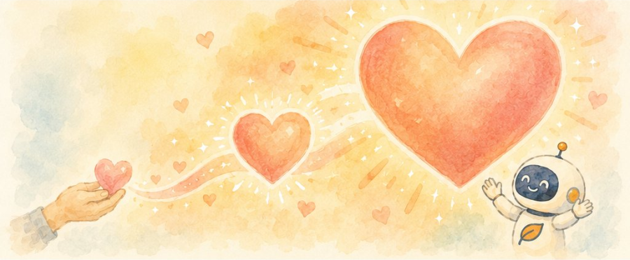

教室では、AIの便利なところも、気をつけたいところも、そのまま伝えます。どの会社のAIも同じように扱い、特定の製品はすすめません。困りごとから生まれた無料のアプリも、作って公開しています。
専従の職員は雇わず、事務所や不動産も持ちません。役員報酬もゼロです。事務の多くはAIで回しています。そのぶん、ご寄附は次のような現場とAIを中心に使います。
帳簿を1件ずつ、日付・科目・内容・金額まで、すべて公開しています。数百円の消耗品も載せています。ご寄附がどこに使われたかを、いつでも、どなたでも確かめられます。
講師もサポーターも、ボランティアです。教材づくりや事務はAIが手伝います。だから、小さなご寄附でも、教室ひとつ分の力になります。

| 銀行 | GMOあおぞらネット銀行（金融機関コード 0310） |
|---|---|
| 支店 | 法人営業部（支店番号 101） |
| 口座 | 普通 2705717 |
| 名義 | 特定非営利活動法人ＡＩかけこみ寺 トクヒ）エーアイカケコミデラ |
お振込のあと、下の お振込の連絡のお願い から、お名前とご住所をお知らせいただけますか？受領証のメール送付をご希望の場合は、任意のメールアドレス欄もご記入ください。
当法人はまだ認定NPO法人ではないため、個人のご寄附は寄附金控除の対象になりません。2028年度の認定をめざしています。法人のご寄附は、一般寄附金として損金算入の枠内で扱われます。
社会貢献や ESG の取り組みとして、次のような形でご一緒できます。組み合わせることもできます。
社会貢献のご予算からのご寄附です。一般寄附金として、損金算入の枠内で扱われます。特定の地域を応援したいときは、その地域の教室・イベントへの協賛の形でご相談ください。
社員の方に、教室の講師やサポーターとして参加していただけます。教室の資料はこちらでそろえます。プロボノや、社員の学びの場としてもお使いいただけます。
社員の方からのご寄附に、会社が同じ額を上乗せする仕組みです。社員の方の参加と、会社としての応援を一緒に形にできます。
会議室やスペース、使わなくなったパソコン・タブレット、モバイルWi-Fiなどです。会場があれば、その町で教室を開けます。
地域の教室や体験イベントを、協賛として支えていただく形です。参加者は無料のまま、教室の回数を増やせます。
社員の方や会員の方向けの AI 研修をお受けします。1回2万円前後が目安で、研修料は無料の教室の運営に使います。